Check the first screen, navigation, empty states, and whether the main action is clear.
Computer Science Student | Web Developer | Research & Teaching Assistant
Fidel Anyanwu
I build responsive web apps, dashboards, browser games, database-backed features, and cloud-deployed projects with clean interfaces, practical logic, and documentation that makes each project easier to review. My work connects front-end polish with JavaScript and TypeScript, SQL and Supabase data flows, cloud computing concepts, Microsoft 365 tools, troubleshooting, reporting, and deployment workflows for software, IT analyst, and technical support roles.
Live Vercel sites
GitHub repos
Database flows
Cloud deployment
8 personal project showcases
1 collaborative bookstore project
Live Vercel deployments with GitHub repos
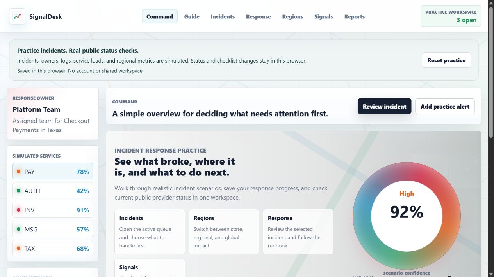
Portfolio focus
Live products, clear flows, data-aware features, cloud deployment, and repos a reviewer can inspect.
How To Read This Portfolio
Start with what the project helps someone do.
I want each project to answer a practical question quickly. SnapChef helps someone move from a food image to a recipe direction. SignalDesk helps a team see what is happening and what to do next. StudyOps helps a student keep study work from becoming scattered.
Look for uploads, filters, saved records, forms, game controls, or page-to-page movement.
Use the README and code structure to see what I built and how I explain it.
About
Focused on useful, polished projects with the technical habits companies expect.
My portfolio includes SnapChef, SignalDesk, StudyOps, Campus Connect, Arcane Duel, Tetris, FitNex, and FortunatoCare. Each project represents a different part of my growth as a developer: responsive layouts, interactive game systems, API-backed features, authentication flows, saved data, database records, cloud deployment, accessible forms, troubleshooting notes, and clear documentation. I also include CowboysBookstore as a collaborative team project because it gave me experience contributing to a shared application with a backend, frontend, and auth workflow.
Recruiter Snapshot
A quick read on what I can contribute.
What I Do
Specific areas I have practiced across these projects.
Build responsive front-end interfaces
I create organized page layouts, navigation, hero sections, project cards, forms, image previews, mobile breakpoints, and UI states that make a site easier to understand on desktop and phone screens.
Add user-facing JavaScript behavior
I have built DOM interactions, localStorage state, form feedback, canvas game loops, keyboard controls, touch controls, collision checks, scoring, and state transitions like pause, restart, save, delete, and quit.
Connect practical app features
In SnapChef, I worked with API routes, AI analysis, Supabase auth, saved scan records, preferences, and result views. SignalDesk connects public status signals to response review. In team work, I have exposure to Django REST, React, TypeScript, JWT auth, Docker, CI, and cloud-style deployment workflows.
Prepare projects for review
I keep projects easier to evaluate with live Vercel links, GitHub repos, READMEs, screenshots, project descriptions, setup notes, and feature summaries that explain the purpose behind the code. I also use Microsoft Excel, Word, and PowerPoint for reporting, planning, and presentation cleanup.
Build Map
The kind of work I can explain from the code and the screen.
Full-stack product flow
Image input, server-side analysis, saved scan history, preferences, result pages, and delete behavior.
Cloud-aware workflow design
Separate views, response steps, status summaries, public source checks, scope switches, and reports without crowding the home page.
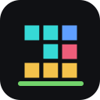
Interactive logic
Canvas loops, keyboard input, collision checks, scoring, pause states, reset flows, and mobile controls.
What I Bring
How I try to make the work useful.
Clean user interfaces
I focus on layouts that are easy to scan, forms that make sense, and pages that work across desktop and mobile screens.
Data and cloud habits
I have practiced API routes, authentication flows, saved user data, localStorage state, SQL concepts, Supabase records, public status APIs, and cloud deployment habits.
Documentation mindset
I write READMEs, describe setup steps, list project features, and keep repos easier to understand for reviewers and teammates.
8
Personal projects showcased across web, games, and app interfaces
3
Games and interactive tools using real-time logic
1
Full-stack AI app with auth, saved data, and database practice
1
Collaborative team repository included separately
My Work
Projects I can open and talk through confidently.
Each featured project has enough detail to explain the problem, build decisions, technical stack, and what I improved while making it.
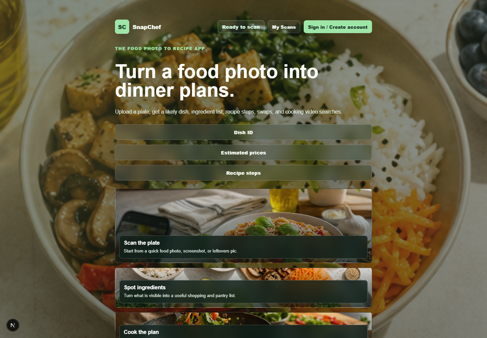
Full-stack web app
SnapChef
A food image assistant that turns a food photo or screenshot into a likely dish name, ingredients, recipe steps, shopping estimates, nutrition notes, safety guidance, substitutions, and video-search links.
Problem
People see food online or in their kitchen and need a quick recipe direction.
Build
Image upload, preferences, AI analysis, recipe views, shopping support, and saved scans.
Improvements
Stronger full-stack practice with API routes, auth, database records, and polished UI states.
- Built with Next.js, React, TypeScript, and CSS Modules.
- Uses a server-side AI analysis route for Gemini or OpenAI.
- Supports Supabase auth, saved scans, scan history, and delete flows.
Next.js
React
TypeScript
Supabase
AI APIs
Incident response workspace
SignalDesk
A production-style response workspace with focused screens for command, guide, incidents, response plans, regions, public signals, and reports.
Problem
Incident data is often scattered across alerts, logs, service views, and team handoffs.
Build
Created a compact command home plus separate taskbar views for the guide, incidents, response, U.S./global coverage, public source checks, and reports.
Focus
Kept the home screen light while deeper information opens only when the user chooses that workspace, including outside status checks from GitHub, Vercel, and Cloudflare.
- Built with Next.js, React, TypeScript, and custom CSS.
- Includes a how-to guide, working app navigation, incident filters, coverage scope switches, service map selection, and response status actions.
- Uses server-side routes to review incident evidence and pull public status signals from GitHub, Vercel, and Cloudflare.
Next.js
React
TypeScript
Server Routes
Status APIs
Vercel
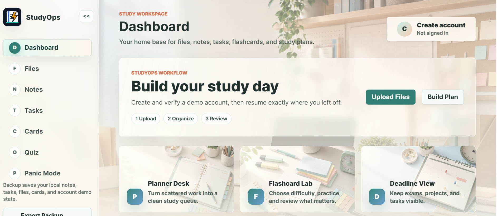
Browser productivity app
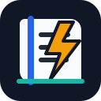
StudyOps
A local study organizer that brings notes, file imports, tasks, flashcards, quiz filtering, account-style sign in, backups, and Panic Mode planning into one polished academic workspace.
Problem
Students often keep assignments, notes, deadlines, and test prep scattered across too many places.
Build
Created a light dashboard with drag-and-drop importing, recent files, study queue, flashcards, quiz controls, and backup export/import.
Focus
Made the app feel understandable in the first few seconds with section descriptions, visual cards, symbols, and guided study flows.
- Runs locally in the browser with localStorage persistence and no required backend.
- Includes account-style create, sign-in, and verification flow that returns users to their most recent page.
- Lets users import study files, organize notes, filter quiz cards, export backups, and build short-notice Panic Mode study plans.
HTML
CSS
JavaScript
LocalStorage
UX Design
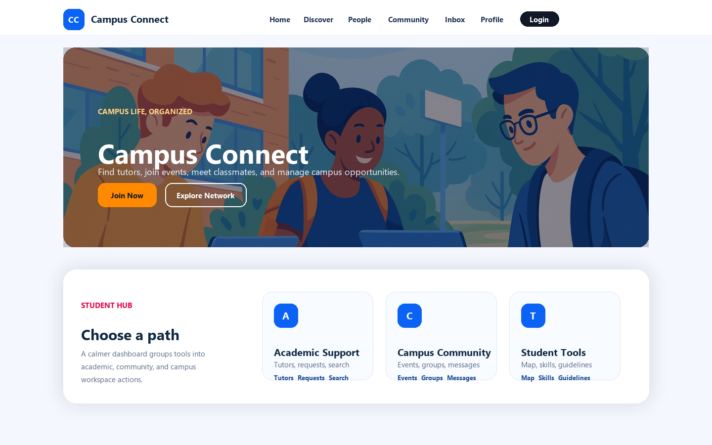
Campus community website
Campus Connect
A multi-page campus platform for helping students find tutors, events, groups, messages, map pins, requests, and skill exchange opportunities without overwhelming the top navigation.
Problem
Students need one place to discover support, opportunities, people, and campus activity.
Build
Created connected pages, grouped student hub actions, forms, navigation, and saved browser state.
Focus
Simplified the crowded tab bar into clearer Discover, People, Community, Inbox, and Profile paths.
- Built with HTML, CSS, and vanilla JavaScript.
- Includes profile, auth, network, events, groups, messages, map, admin, and report flows.
- Uses responsive layouts, a mobile drawer, labeled forms, and localStorage UI state.
HTML
CSS
JavaScript
Responsive UI
UX Polish
Accessibility
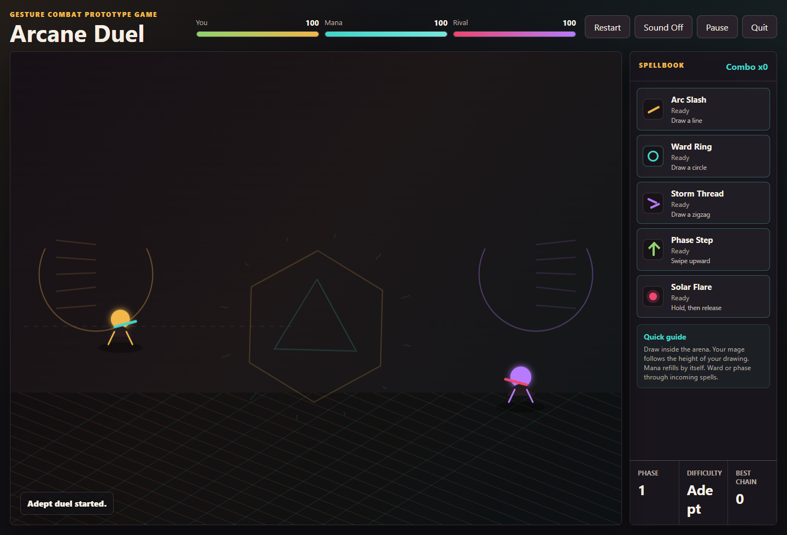
Browser canvas game
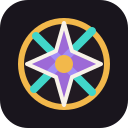
Arcane Duel
A gesture-combat browser game where the player draws spell shapes directly on the arena to attack, defend, dodge, and survive against a rival mage.
Problem
Most small browser games use button-only controls, so I wanted a more expressive interaction built around drawing gestures.
Build
Built a canvas arena, custom gesture recognition, spell cooldowns, health and mana systems, enemy behavior, and difficulty settings.
Improvements
Added animated shields, projectiles, hit effects, sound toggles, pause and quit controls, and a responsive spellbook panel.
- Recognizes line, circle, zigzag, upward swipe, and hold gestures.
- Uses a real-time canvas loop with projectiles, hit detection, particles, and screen feedback.
- Includes Apprentice, Adept, and Archmage difficulty modes with different enemy pacing.
HTML
CSS
JavaScript
Canvas
Game Logic
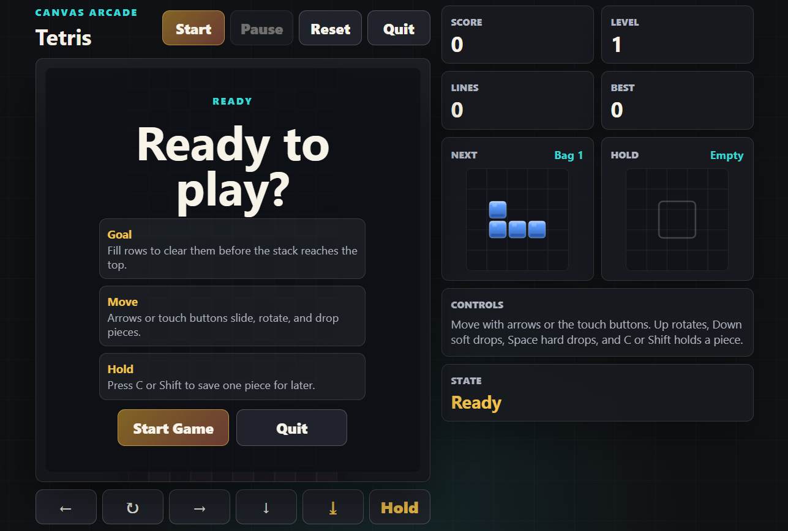
Browser canvas game
Tetris Game
A polished browser-based Tetris game with falling tetrominoes, rotation, collision detection, row clearing, scoring, levels, hold and next-piece previews, and a compact one-screen arcade layout.
Problem
I wanted to rebuild my earlier Tetris project into a stronger, portfolio-ready version that works from a public link.
Build
Created a canvas playfield, 7-bag piece randomizer, ghost piece, keyboard controls, touch controls, pause, restart, quit, and saved best score.
Focus
Kept the full game visible without scrolling while still showing instructions, stats, hold, next piece, and menu states.
- Built with HTML, CSS, and vanilla JavaScript.
- Implements movement, wall checks, rotation kicks, collision detection, hard drop, soft drop, line clears, score updates, and level speed changes.
- Includes a start menu with clear instructions and a quit flow that resets the board cleanly.
HTML
CSS
JavaScript
Canvas
Game Logic
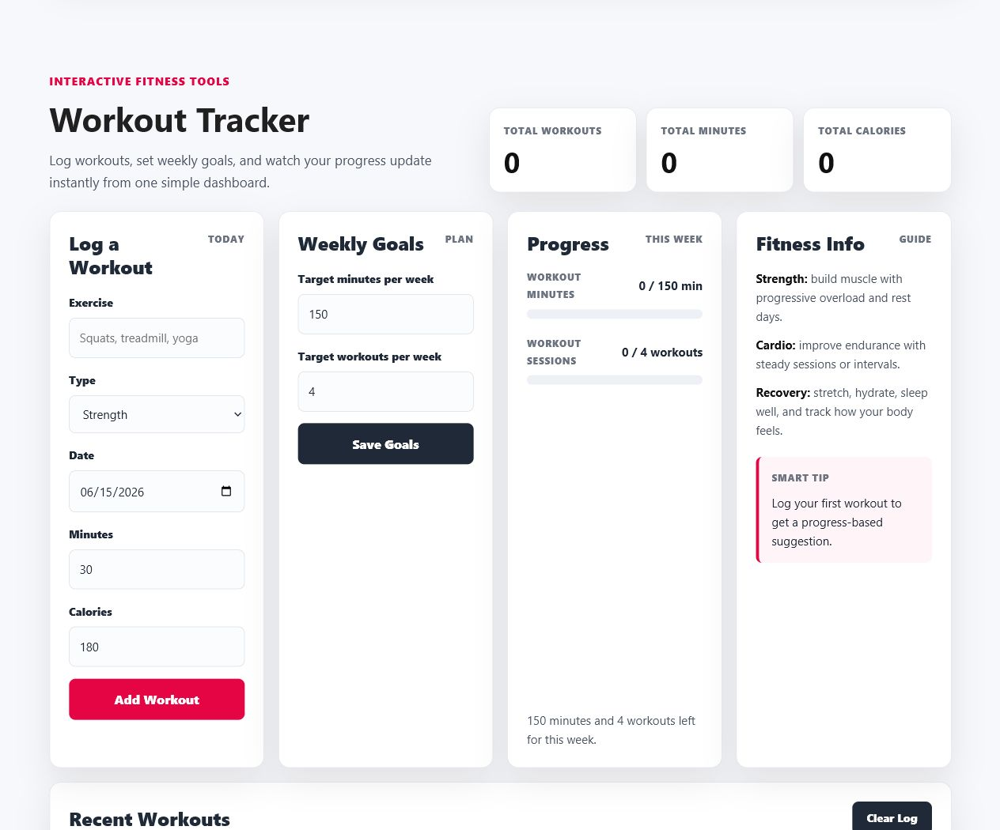
Interactive fitness tracker website
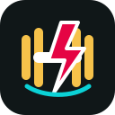
FitNex Fitness Tracker Website
A multi-page fitness website with workout logging, weekly goals, progress summaries, class discovery, testimonials, and contact details.
Problem
A fitness club needs more than static information; users should be able to organize workouts and see progress clearly.
Build
Built a responsive homepage tracker with workout forms, goal inputs, progress bars, dynamic totals, and recent workout history.
Improvements
Used localStorage and JavaScript DOM updates so logged workouts and goals persist in the browser without a backend.
- Users can add workouts by exercise, type, date, minutes, and calories.
- Weekly goals update live progress bars, total workouts, total minutes, and total calories.
- Includes fitness guidance, class cards, testimonials, responsive navigation, and contact information.
- Checked in browser on desktop and mobile with no failed requests or layout overflow.
HTML
CSS
JavaScript
Bootstrap
LocalStorage
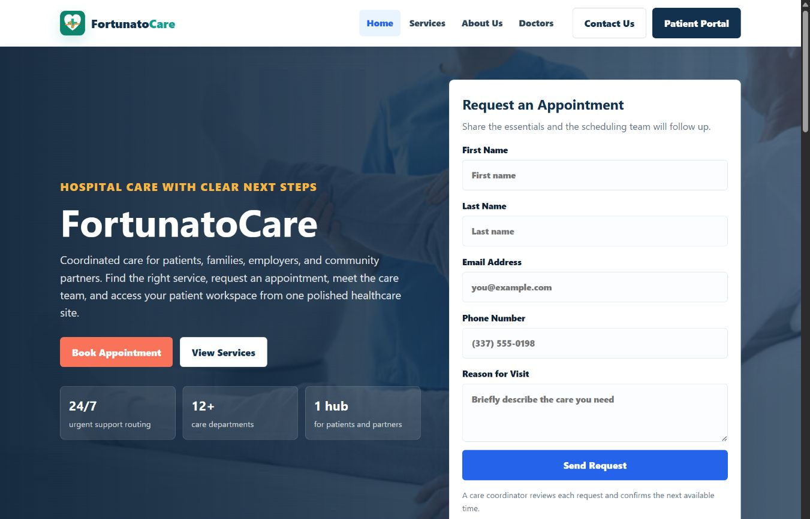
Multi-page healthcare website
FortunatoCare Hospital Website
A polished hospital website with dedicated pages for services, doctors, about information, contact, appointment intake, and a patient portal account flow, refreshed with page-specific healthcare visuals instead of repeated stock imagery.
Problem
Patients and partner organizations need clear paths to find services, book appointments, review doctors, contact support, and access portal tools.
Build
Rebuilt FortunatoCare as a multi-page static site with Home, Services, About, Doctors, Contact, and Patient Portal pages.
Improvements
Added persistent account creation, security-code verification, sign-in/sign-out states, company-ready care messaging, unique doctor portraits, and a more professional visual system.
- Navigation opens separate pages instead of only scrolling through one long page.
- Portal users can create an account, verify access, sign out, and sign back in without losing the account.
- Includes appointment request confirmation, distinct doctor cards, service pathways, organization care copy, and contact details.
- About, Services, Doctors, and Contact use separate visuals so the site feels like a finished healthcare brand.
- Verified locally and on the live Vercel deployment for desktop and mobile layout behavior.
HTML
CSS
JavaScript
Multi-page UI
LocalStorage
Accessibility
Cowboy Online Bookstore
Team Auth + Store Project
Django REST
React
JWT Auth
Collaborative team project
Cowboy Online Bookstore
Included as team work, not a solo build.
A McNeese campus bookstore authentication project with a Django REST backend, React and TypeScript frontend, JWT auth endpoints, Docker setup, and CI checks.
- Backend stack includes Django, Django REST, PyJWT, and tests.
- Frontend stack includes React, TypeScript, Vite, Tailwind CSS, and Vitest.
Review Guide
What to look for when reviewing my work.
Live site behavior
Try the deployed links first. The projects are meant to be opened, clicked through, and tested so the interface and behavior are visible.
Code organization
Look for separated HTML/CSS/JS in static projects, component structure in React/Next.js work, and README notes explaining setup and features.
User flow decisions
I pay attention to how users move through a page: calls to action, forms, saved states, mobile navigation, feedback messages, and reset or quit flows.
More About My Work
Choose the part of my background you want to review next.
I moved these into their own pages so recruiters can choose the detail they want without reading everything on the homepage.
01
My Approach
How I plan, build, connect, test, polish, and document projects.
02 ExperienceHow teaching, research support, and project work shape the way I build.
03 SkillsA clearer breakdown of front end, app development, data, cloud, Microsoft tools, and workflow.
04 ContactWays to reach me, what I am open to, and examples of work I can discuss.
Interview Notes
What I can talk through without needing to prepare from scratch.
Why a feature belongs on the first screen, when it should move to a separate page, and how I keep pages understandable.
How I check layout behavior, links, saved state, form feedback, and browser issues before publishing.
React, Next.js, TypeScript, Supabase, API routes, SQL, cloud computing, deployment workflows, AWS fundamentals, Microsoft 365, troubleshooting, and cleaner product-style workflows.
Contact
Want the direct details?
The contact page has my email, GitHub, LinkedIn, portfolio link, and the kinds of roles or project conversations I am looking for.